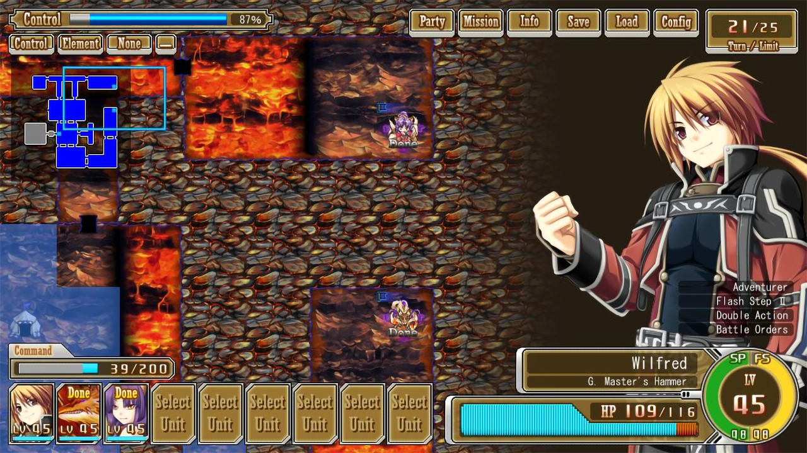
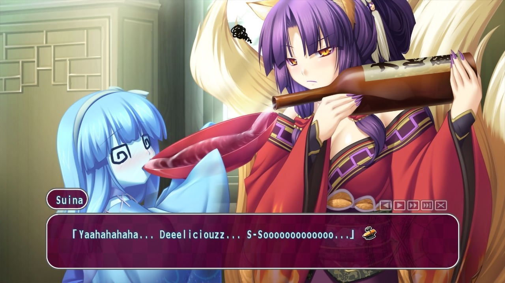
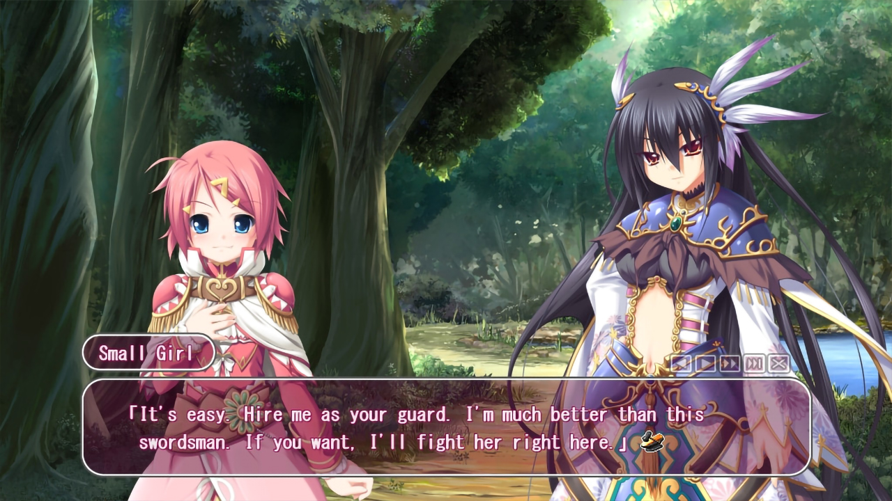
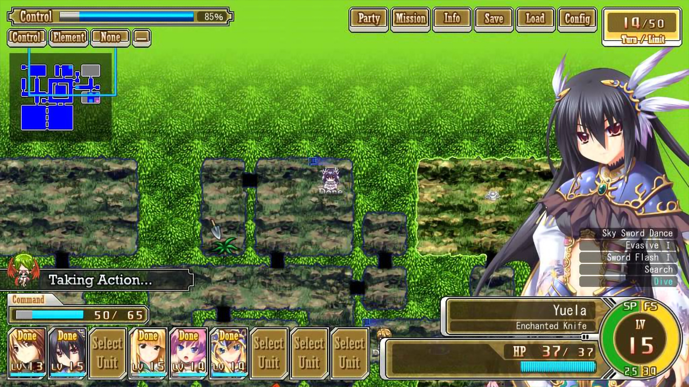
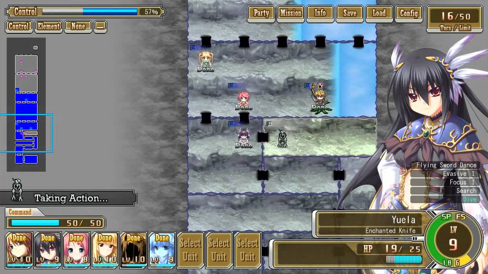
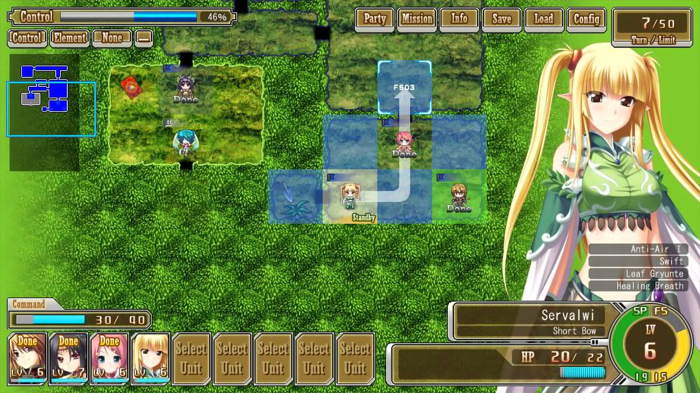

Kamidori Alchemy Meister
Release Date:
April 22, 2011
Genres:
Comedy, Romance, Action
Novel Length:
Anime Adaptation:
None
Prequel:
None
Sequel:
None

Reviews
"At the end of this long review, this game is really worthwhile and fun. This game will be missed."
"For anyone looking for a H game with actual gameplay, I would highly recommend this one."
"Kamidori is fun and had quite an addictive gameplay."
About This Novel
In the Setetori region of the southern part of the Raulbhach continent lies the Mikelti Kingdom, and amongst the seven major cities of this region is the workshop city of Yuidora. This is where a young orphan named Wilfred lives, pursuing his dream of becoming an alchemist. However, soon after gaining his license he gets entangled with three girls with differing personalities and goals, and he soon agrees to hire them as his guards in order to help each other out. Like this, Wil begins his life as an alchemist, surrounded by the ever growing group of his allies as he follows his parents' footsteps in becoming a great alchemist.
(From VNDB)
Technical Details
Platforms:
Windows
Resolution:
16:9
English:
Animated Scenes:
Simple
Voiced:
Partially
You Might Also Like

Get It Now

Recommended
Get It